WAYORA / FULL FRONTEND RAPORU / 29 EKİM 2026
Mobil öncelikli, 10 şehir ve 100 deneyim üzerine kurulu React uygulamasının tasarım sistemi, ekranları, veri akışı, erişilebilirliği ve test durumu.
React 19 · TypeScript · Vite · React Router · Express · PostgreSQL
V2 ürün arayüzü
Kapsam: web/src
51 API + 4 web testi
Mobil E2E: 0 konsol hatası
00 / İÇİNDEKİLER
FRONTEND / V2
Wayora / Full frontend raporu / 00
01 / ÜRÜN
10 ŞEHİR · 100 DENEYİM
Wayora, bir şehirde ne yapılacağını seçmek, yaklaşık maliyeti görmek ve bu seçimleri gün gün bir rotaya dönüştürmek için tasarlandı. V2, bunu bir dergi gibi değil, bir seyahat aracı gibi yapıyor.
Şehir ve deneyimleri fotoğraf, fiyat, süre ve puanla karşılaştır.
İlgini çeken durakları seç; tercihlerini ve bütçeni belirle.
Günlere dağıt, sırala, sil; kalan bütçeyi takip et.
| Şehir | 10 |
| Deneyim | 100 |
| Fotoğraf | 16 lisanslı görsel |
| API testi | 51 geçti |
| Web testi | 4 geçti |
| V2 mobil E2E | 0 konsol hatası |
Wayora / Full frontend raporu / 01
02 / MİMARİ
REACT 19 / VITE
| Route | Erişim | Ekran / davranış |
|---|---|---|
| / | Public | Landing, arama ve şehir keşfi |
| /kesfet | Public | 10 şehir, arama, filtre, sıralama |
| /kesfet/:slug | Public | Şehir rehberi ve deneyim seçimi |
| /kesfet/:slug/:experienceSlug | Public | Deneyim detayı, harita, plana ekle |
| /login, /register | Public | Oturum formları, yönlendirme |
| /onboarding | Protected | 3 adımlı tercih akışı |
| /trips | Protected | Yaklaşan, taslak, geçmiş |
| /trips/new | Protected | 3 adımlı rota sihirbazı |
| /trips/:id | Protected | Gün sekmeleri, timeline, harita |
| /profil | Protected | Hesap, tercihler, çıkış |
| * | Public | 404 |
Wayora / Full frontend raporu / 02
03 / VERİ
FETCH / HTTPONLY COOKIE
Açılışta `/api/auth/me` çağrılır. Kullanıcı varsa `user`, yoksa `null` olur. `loading` bitene kadar korumalı rota spinner gösterir. Login ve register kullanıcıyı state'e yazar; logout önce ana sayfaya geçer, sonra çerezi temizler.
Oturum yoksa `/login`'e `from` state'i ile yönlendirir. Query string korunur; böylece şehir seçiminden gelen kullanıcı girişten sonra aynı forma döner.
Tüm istekler `api.ts` üzerinden, `credentials: 'include'` ile gider. HTTP hatası `ApiError` olarak fırlatılır. Sayfalar doğrudan fetch çağırmaz.
| Auth | register, login, logout, me |
| Tercih | getPreferences, savePreferences |
| Gezi | listTrips, getTrip, createTrip, deleteTrip |
| Plan | generateTrip, importExperiences |
| Aktivite | addActivity, deleteActivity, reorderActivity |
| Keşif | listCities, getCity, searchCities |
City ve CityExperience tabloları 10 şehir / 100 deneyim içerir. Sunucu açılışında seed edilir; API boşsa statik katalogdan aynı cevabı üretir.
Global store yok. Auth dışındaki veriler sayfa içinde useEffect ve yerel state ile tutulur. Rota düzenlemede iyimser güncelleme kullanılır.
Wayora / Full frontend raporu / 03
04 / TASARIM SİSTEMİ
TOKENLAR / BİLEŞENLER
Sayfa zemini
Kart, form, sayfa
Metin, birincil buton
İkincil metin
Kenarlık, ayraç
Yalnızca aktif / seçili
| Display | 30/34 · 800 |
| H1 | 24/30 · 800 |
| H2 | 19/24 · 700 |
| Gövde | 16/24 · 400 |
| Small | 14/20 · 400 |
| Label | 12/16 · 700 |
| Veri | Mono 14-18 · 600 |
Overpass gövde, Overpass Mono saat/fiyat/süre. Anton ürün ekranında kullanılmıyor.
Wayora / Full frontend raporu / 04
05 / LANDING
PUBLIC / MOBILE FIRST
Landing, ürünü tek bir değer önerisiyle anlatır: şehri seç, günleri Wayora sıralasın. Arama alanı doğrudan yeni rota formuna gider; giriş gerekiyorsa query string korunur. Alt bölümlerde 3 adımlı açıklama, 10 şehirlik yatay ray ve Berlin örnek günü bulunur.
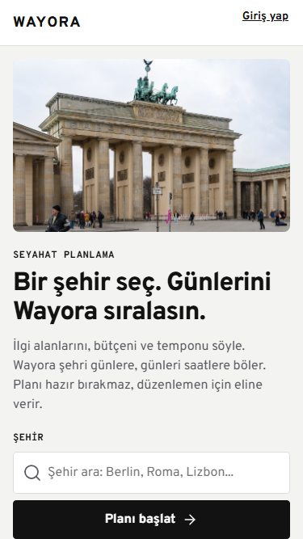
Fotoğraf, başlık, arama ve tek ana CTA aynı akışta.
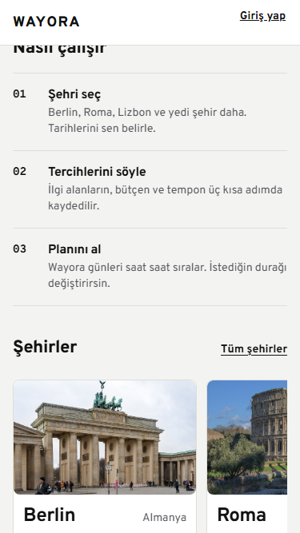
Nasıl çalışır, şehir rayı ve örnek gün.
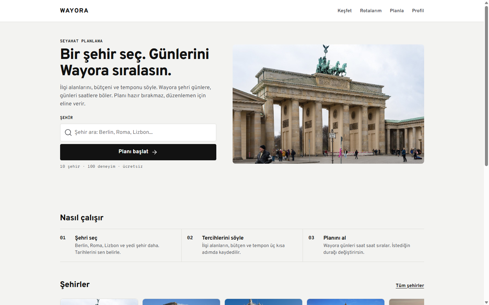
Masaüstünde iki kolonlu hero; aynı içerik daha geniş nefes alanıyla.
Wayora / Full frontend raporu / 05
06 / AUTH
FORM / SESSION
Giriş ve kayıt tek kartta toplanır; poster veya dekorasyon formun önüne geçmez. Hatalar `role=alert` ile, bilgilendirmeler `role=status` ile gösterilir. Google ve şifre sıfırlama sağlayıcısı bağlı olmadığı için sahte başarı üretilmez; açık bir bilgilendirme gösterilir.
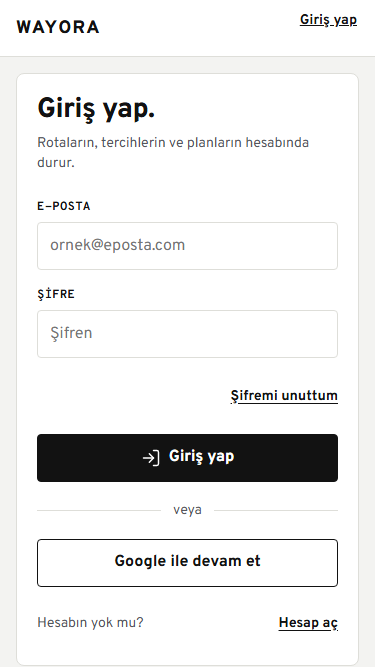
E-posta, şifre, şifremi unuttum, Google ve kayıt bağlantısı.
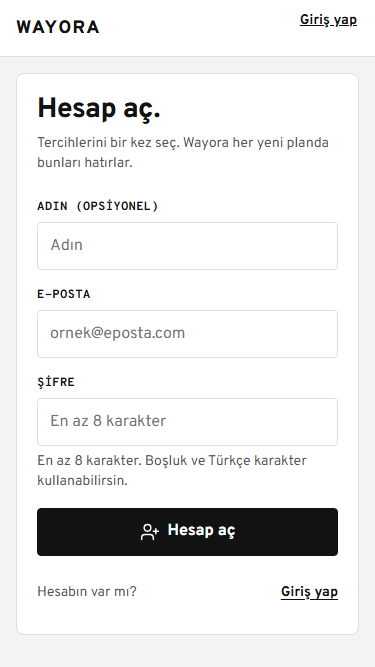
Ad, e-posta, şifre; 8 karakter doğrulaması.
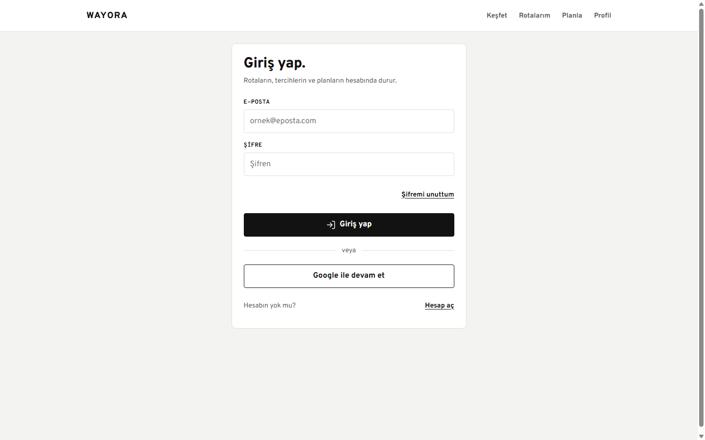
Masaüstünde ortalanmış 480 px kart; form odaklı.
Wayora / Full frontend raporu / 06
07 / ONBOARDING
İLGİ · BÜTÇE · TEMPO
Onboarding tek sayfada üç adım olarak çalışır. İlk adımda en az iki ilgi alanı seçilir; ikinci adımda bütçe, üçüncü adımda tempo belirlenir. Adımlar arasında geri dönülebilir, “Atla” ile tercihler atlanabilir. Kayıt `api.savePreferences` ile yapılır ve rotalara yönlendirilir.
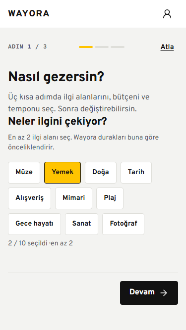
10 çip; en az 2 seçim.
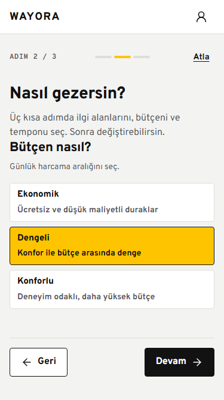
Ekonomik, dengeli, konforlu.
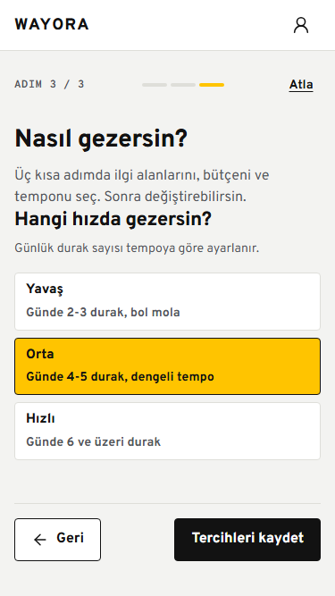
Yavaş, orta, hızlı; travelStyle türetilir.
Wayora / Full frontend raporu / 07
08 / KEŞFET
ARAMA / FİLTRE / SIRALAMA
Keşfet, 10 şehir özetini yükler. Arama ilk kullanımda şehir detaylarını da getirir; böylece şehir adı, deneyim adı ve etiketler üzerinden arama yapılabilir. Kategori çipleri Yemek, Müze, Doğa ve Gece; sıralama fiyat ve isim seçenekleriyle çalışır.
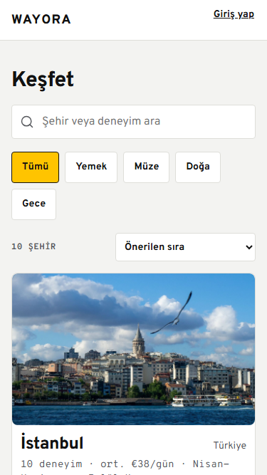
Arama, sarı seçili çip, 10 şehir ve fotoğraflı kart.
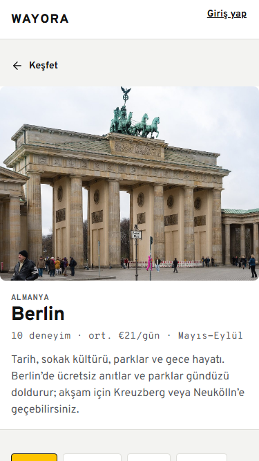
4:3 hero, şehir özeti ve günlük ortalama.
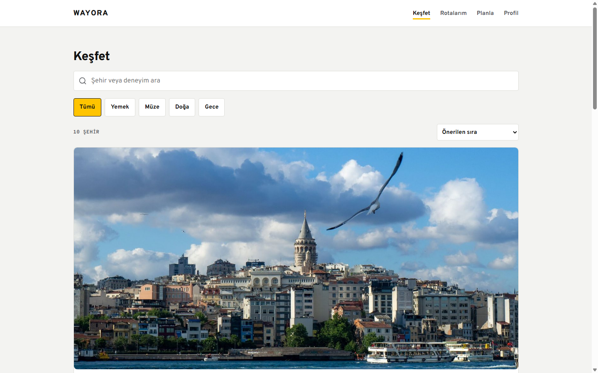
Geniş ekranda kart grid'i ve aynı arama/filtre hiyerarşisi.
Wayora / Full frontend raporu / 08
09 / ŞEHİR
FİLTRE / SEÇİM / CTA
Şehir sayfası `getCity(slug)` ile 10 deneyimi getirir. Ücretsiz, tarih, yemek ve gece filtreleri uygulanır. Her deneyim satırında 88x88 fotoğraf, açıklama, süre, fiyat, puan ve 44 px seçim butonu vardır. Seçim yapılınca sabit alt çubuk görünür; seçilen kimlikler yeni rota URL'sine taşınır.
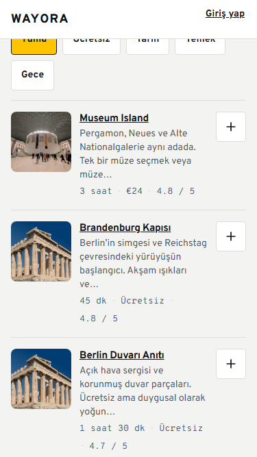
Filtreler, fotoğraflı satırlar ve seçim butonları.
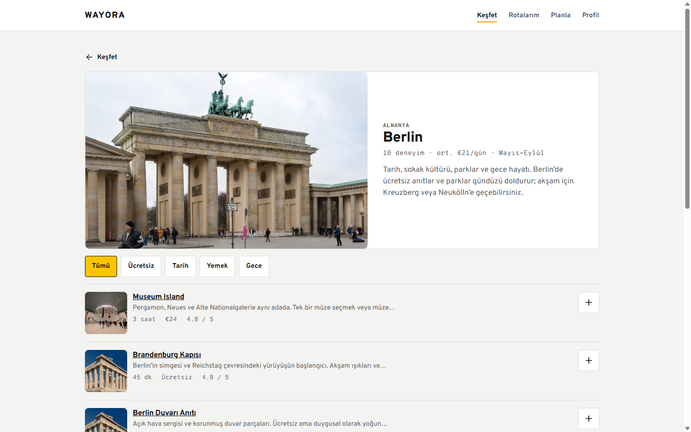
Hero ve şehir bilgisi iki kolonda; deneyimler altta.
Seçilen deneyim sayısı ve kişi başı toplam alt çubukta; CTA `/trips/new?destination=...&experiences=...` adresine gider.
Filtre sonucu yoksa kullanıcıya filtreyi gevşetmesi söylenir; sayfa boş kalmaz.
Wayora / Full frontend raporu / 09
10 / DENEYİM
4:3 HERO / HARİTA / CTA
Deneyim detayı şehir verisinden seçilen slug'ı bulur. 4:3 hero, kategori, açıklama, süre, fiyat, puan ve bölge fact kartlarıyla gösterilir. Harita OpenStreetMap embed bileşenidir; yüklenemezse dış bağlantı fallback'i vardır. Sabit alt çubuk fiyatı ve “Plana ekle” eylemini taşır.
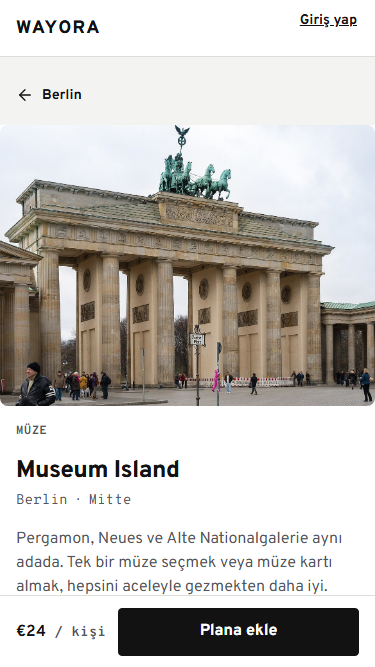
Hero, başlık, bölge ve kısa açıklama.
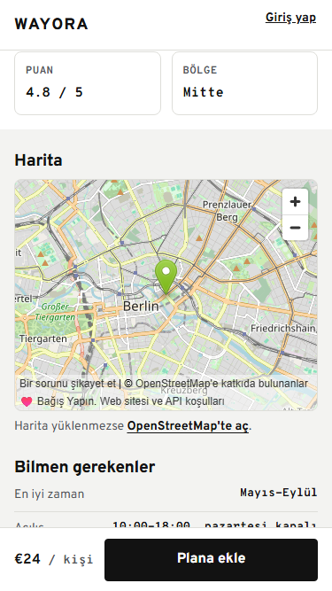
Fact kartları, harita ve pratik bilgiler.
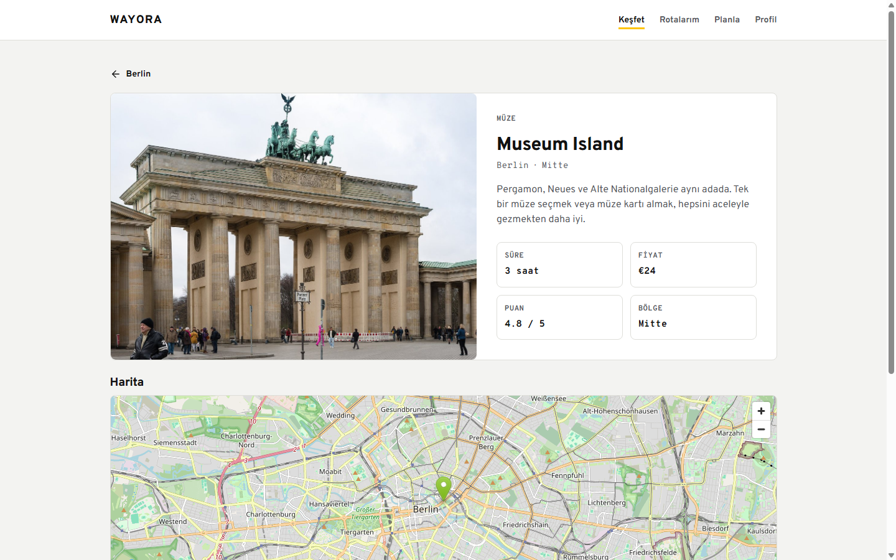
Hero ve bilgi iki kolonda; sabit eylem geniş ekranda normal akışa döner.
Wayora / Full frontend raporu / 10
11 / ROTALAR
YAKLAŞAN / TASLAK / GEÇMİŞ
Rotalar tarih ve duruma göre üç gruba ayrılır. Planlı ve tarihi geçmemiş rotalar yaklaşan; draft veya failed olanlar taslak; bitiş tarihi geçmiş olanlar geçmiş olur. İlk yaklaşan kartta siyah geri sayım panosu vardır. Silme iki adımlı onay ister.
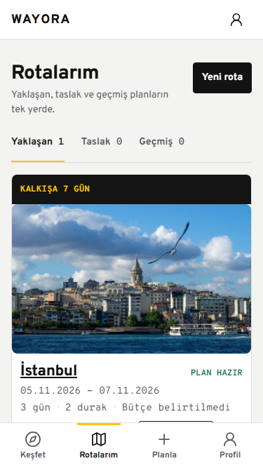
Sekmeler, yaklaşan rota, geri sayım ve plan durumu.
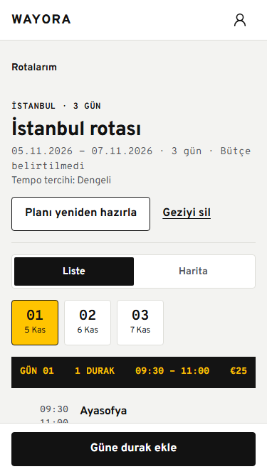
Gün sekmeleri, siyah gün panosu ve timeline.
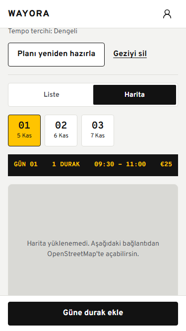
Liste/harita geçişi ve OSM fallback.
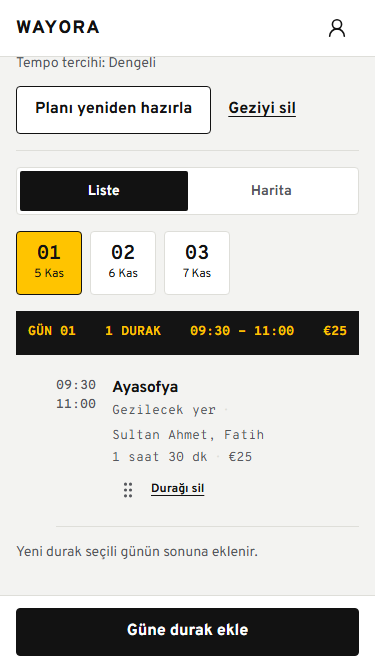
Saat, durak, süre, fiyat ve sıralama tutamacı.
Wayora / Full frontend raporu / 11
12 / YENİ ROTA
ŞEHİR / TARİH / BÜTÇE
Yeni rota ekranı şehir, tarih ve bütçe/tempo adımlarına ayrılır. `destination` ve `experiences` query parametreleri korunur. Seçili deneyim varsa rota oluşturulunca `/api/trips/:id/experiences` ile günlere dağıtılır; yoksa AI/offline plan üretilir. Hatalar oluşturulan rota linkiyle birlikte gösterilir.
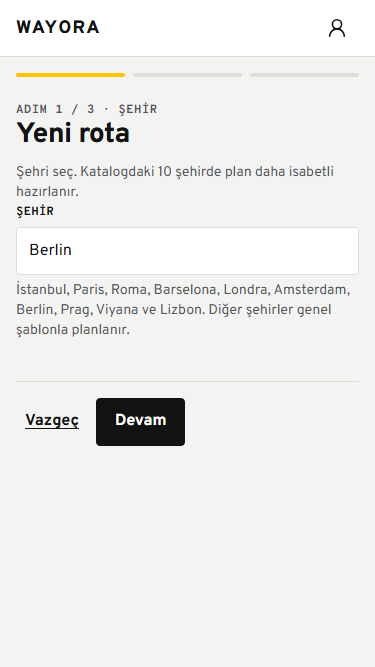
10 şehir datalist ve seçili deneyim sayısı.
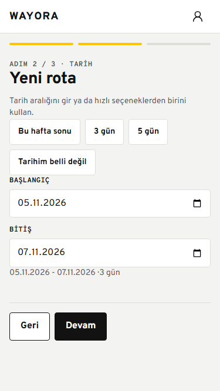
Hızlı tarih seçenekleri ve tarih aralığı.
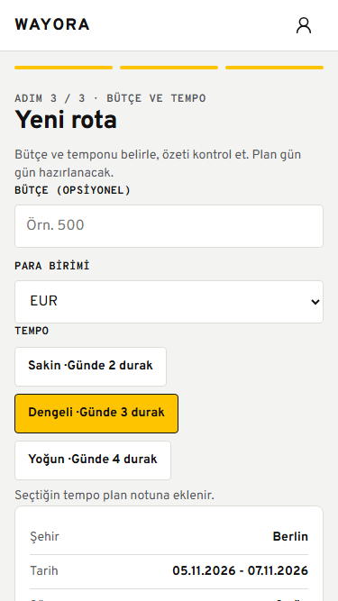
Bütçe, para birimi, tempo ve özet.
Wayora / Full frontend raporu / 12
13 / PROFİL
AUTH / PREFERENCE
Profil, AuthContext'teki kullanıcıyı ve `getPreferences` cevabını gösterir. Avatar baş harften üretilir; ilgi alanları, bütçe, seyahat tarzı ve tempo listelenir. Tercihleri düzenle, Rotalarım ve Keşfet bağlantıları bulunur. Çıkışta önce ana sayfaya geçilir, sonra oturum API'si çağrılır.
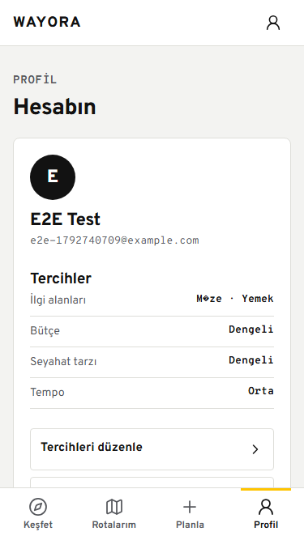
Avatar, e-posta, tercih özeti ve hesap işlemleri.
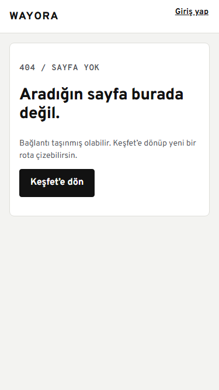
Bilinmeyen route için sade dönüş ekranı.
ErrorBoundary beklenmeyen render hatalarını yakalar. Kullanıcı boş ekran yerine “Sayfa açılamadı” mesajı ve “Sayfayı yenile” butonu görür. Teknik hata konsola yazılır; kullanıcıya stack trace gösterilmez.
Wayora / Full frontend raporu / 13
14 / RESPONSIVE
320-1440 PX
| Alan | Mobil | Masaüstü |
|---|---|---|
| Header | Logo + profil/giriş; nav gizli | Logo + Keşfet/Rotalarım/Planla/Profil |
| Alt menü | 64 px + safe area, 4 sekme; detay ekranlarında gizli | Gizli |
| Landing | Tek kolon, fotoğraf üstte | İki kolon, 48 px boşluk |
| Keşfet | Tek kolon şehir kartı | 2 kolon, ilk kart geniş |
| Şehir | Tam genişlik hero + liste | Hero ve bilgi iki kolon |
| Yeni rota | Tam genişlik adımlar | 720 px odaklı sihirbaz |
| Dokunma | En az 44 x 44 px | Aynı hedefler korunur |
Header ve alt menüde `env(safe-area-inset-*)` kullanılır; iPhone home bar ve çentik hesaba katılır.
Şehir 16:10, deneyim 4:3, liste küçük resmi 1:1 88 px.
Şehir rayı yatay kaydırılır; sayfa dokümanında yatay taşma üretmez.
Wayora / Full frontend raporu / 14
15 / ERİŞİLEBİLİRLİK
WCAG HEDEFİ
Her input label veya aria-label ile bağlı. Hatalar role=alert; bilgi role=status.
:focus-visible 3 px sarı halka. Klavye ile tüm buton ve çipler erişilebilir.
Seçili çiplerde aria-pressed; aktif sekmelerde aria-current veya aria-selected.
Filtre çipleri 44 px dokunma alanı; alt menü 64 px satır; seçim butonu 44 px.
Photo bileşeni başarısız görselde etiketli gri placeholder gösterir; img alt metni vardır.
prefers-reduced-motion desteklenir; scroll animasyonu ve sürpriz geçiş yok.
Sürükleme tutamacı butondur; yukarı/aşağı ok tuşlarıyla klavye sıralaması yapılır.
Sarı yalnızca aktif/seçili; metin ve kenarlık da anlam taşır.
Wayora / Full frontend raporu / 15
16 / PERFORMANS
VITE BUILD
| JS | 343 KB · 104 KB gzip |
| CSS | 26 KB · 5 KB gzip |
| Görsel | 16 optimize JPEG, 208-490 KB |
| Font | Overpass + Overpass Mono |
Wayora / Full frontend raporu / 16
17 / KALİTE
51 API · 4 WEB
| API | 51 test geçti |
| Web | 4 test geçti |
| Lint | geçti |
| Typecheck | geçti |
| Build | geçti |
| Audit | 0 vulnerability |
Fiziksel iOS/Android cihaz, gerçek Google OAuth, gerçek e-posta gönderimi, Mapbox/MapLibre anahtarı ve canlı rezervasyon sağlayıcısı bu sürümün dışında. Bu başlıklar arayüzde sahte başarı olarak gösterilmez; gerçek entegrasyon gerektiğinde eklenir.
Wayora / Full frontend raporu / 17
18 / SINIRLAR
AÇIK KARARLAR
V2 frontend, tasarım guide'ına uygun, mobil öncelikli, gerçek API ve DB üzerinde çalışan bir ürün arayüzü. Eksikler gizlenmiyor; dış sağlayıcı gerektiren başlıklar ayrı tutuluyor.
Wayora / Full frontend raporu / 18 · 29.10.2026